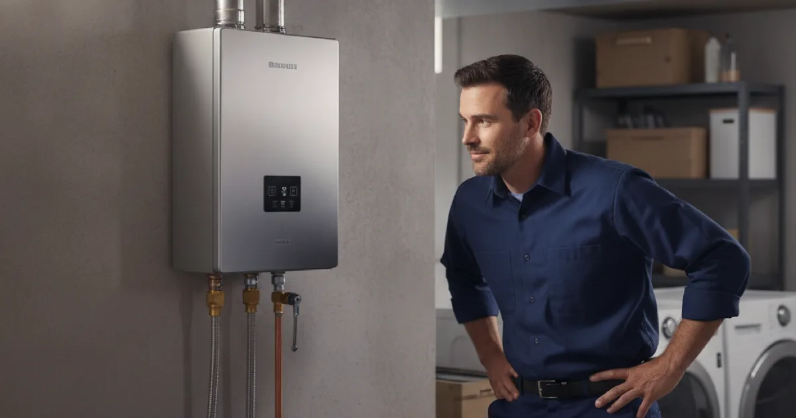

Tankless Water Heater Installation in Westchester County, NY
Tankless is a genuinely good upgrade for the right house. The question worth answering first is whether yours is one of them.
- Licensed & Insured
- Upfront Pricing
- Clear Explanations Before Work Begins
- 15+ Years of Experience

Which houses it suits
Tankless heats water as it passes through rather than keeping a tank hot, which brings real advantages and a few genuine trade-offs.
Strong candidates:
- Tight on space. A wall-mounted unit frees up the footprint a tank occupies, which matters in a small utility area.
- Genuinely running out of hot water with a tank that is already correctly sized for the household.
- Staying put long enough for lower running costs to offset the higher installation cost.
- Intermittent use. A property that sits empty for stretches wastes less with no tank to keep hot.
Weaker candidates:
- An existing tank setup that works fine and is sized correctly. The upgrade cost buys convenience rather than solving a problem.
- Heavy simultaneous demand in a large household — possible, but often needs a larger unit or more than one, which changes the economics.
- Selling in the next couple of years. You are unlikely to recover the difference.
If it turns out tankless is not the right call, there is nothing second-rate about a conventional tank setup. Cheaper to buy, cheaper to fit, simpler to repair.
Weighing up tankless?
Tell us about your house and we will give you a straight answer.
The winter question nobody mentions
A tankless unit is rated by how much temperature rise it can deliver at a given flow rate. That rating is only meaningful alongside the temperature of the water arriving at your house.
Groundwater here is properly cold in winter — considerably colder than in the southern markets where a lot of tankless marketing originates. The unit has to work much harder in February than in August to reach the same shower temperature, which means its usable flow rate drops exactly when household demand is highest.
This is not a reason to avoid tankless. It is a reason to size it for a cold January morning rather than an average annual figure. A unit sized on optimistic numbers performs beautifully for eight months and disappoints for four, and the four are the ones you remember.
The Department of Energy’s overview of how demand-type water heaters actually perform explains the flow-rate and temperature-rise relationship if you want to sanity-check any sizing you are quoted, ours included.
What the installation involves
Replacing tank with tankless is rarely a straight swap, and this is where quotes tend to differ from each other.
- Gas supply. A tankless unit fires at a much higher input than a tank, so the existing line is frequently undersized. Upsizing it is real work and a real cost.
- Venting. Tankless units need their own sealed venting rather than sharing an existing chimney flue, which usually means a new penetration through a wall.
- Electrical. Gas tankless units still need power for controls and ignition.
- Condensate. High-efficiency units produce acidic condensate that needs draining and, often, neutralising.
- Water quality. Where water is hard, scale is the main enemy of a tankless unit. Isolation valves fitted at install make annual descaling straightforward instead of awkward.
- Permit and inspection, which gas work in most Westchester municipalities requires.
None of that is a reason not to do it. It is the reason we walk the basement before quoting rather than pricing a unit over the phone.
What affects the cost
Tankless is rarely a straight swap, and the cost difference between quotes usually lives in the parts nobody mentions. We walk the basement before pricing rather than quoting a unit over the phone.
The real drivers: whether the gas line needs upsizing for the higher input, the new sealed venting a tankless unit requires, condensate handling on high-efficiency models, and isolation valves for future descaling. None of that makes tankless a bad choice — it just needs to be in the honest comparison.
Keeping it working
A tankless unit rewards a little maintenance and punishes neglect, especially where water is hard. Descaling once a year keeps its output up; skipped, scale steadily reduces how much hot water it can deliver.
This is why we fit isolation valves as standard at installation — they turn annual descaling from an awkward job into a straightforward one. Looked after, a tankless heater generally outlasts a conventional tank.
Common questions
Does tankless really give endless hot water?
Endless in duration, yes — there is no tank to empty. But limited in rate: the unit can only heat so much water per minute. Two showers and a dishwasher at once will find that limit on an undersized unit.
Why is there a delay before the hot water arrives?
The unit fires when it senses flow, so there is a short lag plus the usual time for hot water to travel the pipe. A recirculation option can reduce it if that matters to you.
How long do tankless units last?
Generally longer than a conventional tank, particularly when descaled regularly. Neglected in hard water, that advantage disappears quickly.
Do they need annual servicing?
Descaling once a year is the main item, more often in hard water. It is straightforward when isolation valves were fitted at installation, which is why we fit them as standard.
Will it work in a power cut?
No. Gas tankless units need electricity for controls and ignition, so no power means no hot water. A conventional gas tank with a standing pilot will keep supplying what is already hot.
Find out if tankless suits your house
Licensed, insured, and willing to tell you when it does not.